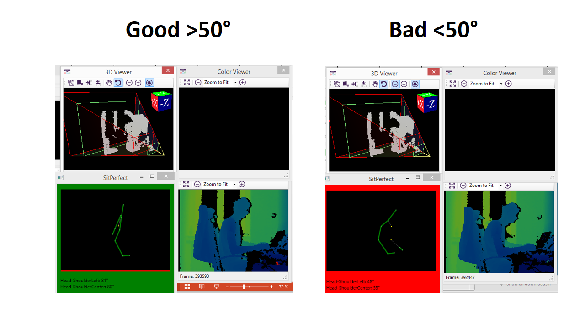

Welcome to SitPerfect

All you need to improve your sitting posture is a Windows PC and a Kinect.
With SitPerfect running dangerous music starts playing when then angle between your shoulders and your head is less than 55°.
This is by no means scientific (yet).
If you want to try and have some fun: jmechtel@gmail.com